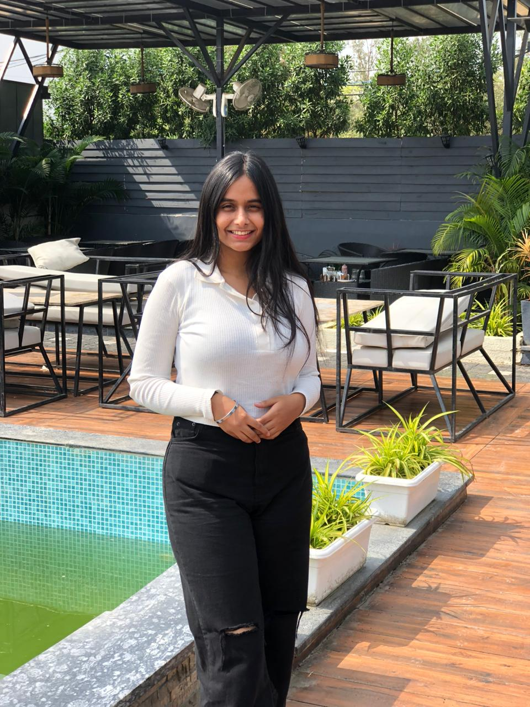

About Me

Motivated and detail-oriented BBA student specialising in Finance, Digital Business, and Entrepreneurship. Strong foundation in financial analysis, e-commerce operations, and digital marketing. Seeking opportunities to contribute to business growth while enhancing my learning in a dynamic, innovation-driven environment.
Education
- BBA in Finance - Barkatullah University Bhopal (2023 - 2026)
- BBA in Digital Business - IIM Bangalore (2024 - 2027)
- 10th - Kendriya Vidyalaya Bairagarh (2021) 87.6%
- 12th - Kendriya Vidyalaya Bairagarh (2023) 83.8%
Projects
- Financial Strategy Report: Executed an in-depth financial project involving balance sheet creation, ratio analysis, WACC computation, capital budgeting (NPV & IRR), and diversified portfolio strategy.
Experience
- Intern - Onprice Infotech Pvt. Ltd., Bhopal (Jan 2024 – Feb 2024): Hands-on exposure in e-commerce operations and marketplace backend management.
- Intern - Versatile Marketing Agency, Bhopal (Dec 2024 – Feb 2025): Worked on SEO, social media marketing, campaign execution, and performance tracking.
Skills
- Financial Analysis
- Digital Marketing
- E-Commerce Operations
- Strategic Planning
- Budgeting & Reporting
- Excel & PowerPoint
- Google Analytics (Basic)
- Team Collaboration
- Problem-Solving